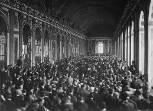

A Paz que Semeou uma Nova Guerra
Em 1918, a guerra chegou ao fim deixando um rastro de destruição e a queda de quatro grandes impérios (Alemão, Austro-Húngaro, Otomano e Russo). O redesenho do mapa-múndi trouxe instabilidade geopolítica.
O Tratado de Versalhes (1919) impôs punições severas e humilhantes à Alemanha, culpando-a inteiramente pelo conflito. Longe de garantir uma paz duradoura, as condições sufocantes desses acordos geraram um forte sentimento de revanchismo que, anos mais tarde, abriria espaço para a Segunda Guerra Mundial.
1. A Nova Ordem Mundial e Suas Fragilidades
O fim da Grande Guerra alterou radicalmente as fronteiras. Do desmembramento dos antigos impérios surgiram novas nações na Europa Central e no Leste Europeu, como a Polônia, a Tchecoslováquia e a Iugoslávia. No entanto, esses novos Estados nasceram em meio a fortes tensões étnicas e crises econômicas profundas.
Para tentar gerenciar essa nova realidade e evitar futuros conflitos de escala global, foi criada a Liga das Nações (antecessora da ONU). Apesar de sua proposta idealista baseada nos "14 Pontos de Wilson", a Liga nasceu enfraquecida: não contava com uma força militar própria e os próprios Estados Unidos decidiram não fazer parte dela, deixando-a sem autoridade real diante das potências insatisfeitas.

O Salão dos Espelhos no Palácio de Versalhes (1919): diplomatas e líderes mundiais selando um acordo político fragilizado.
2. Heranças de um Continente Arruinado
A Europa perdeu sua hegemonia econômica global para os Estados Unidos, que se consolidaram como os maiores credores e a principal potência financeira do planeta. Internamente, o cenário europeu era de devastação:
- Crise Econômica e Desemprego: Cidades destruídas, campos agrícolas inutilizados e indústrias falidas criaram um terreno fértil para a instabilidade social.
- Ascensão de Extremismos: O sentimento de humilhação nacional, somado à miséria material e ao medo do avanço do comunismo após a Revolução Russa de 1917, minou a confiança nas democracias liberais, pavimentando a ascensão de regimes totalitários na década seguinte.
Vídeo Complementar: O Tratado de Versalhes e as Consequências
Assista abaixo a uma análise clara de como o encerramento da Primeira Guerra organizou o mundo para os desafios do século XX:
Como bem definiu o marechal francês Ferdinand Foch na época: "Isto não é uma paz. É um armistício de vinte anos". Ao punir em vez de reconstruir e ao ignorar as bases de um equilíbrio diplomático saudável, os vencedores de 1919 apenas interromperam temporariamente as hostilidades, deixando o terreno preparado para um colapso ainda maior em 1939.